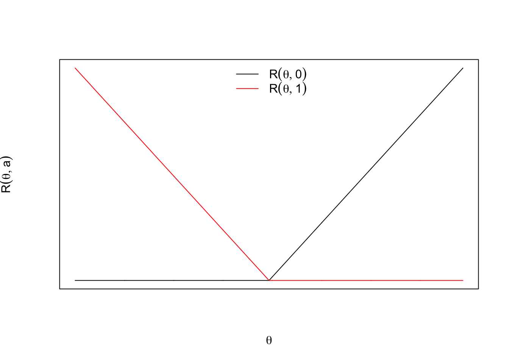
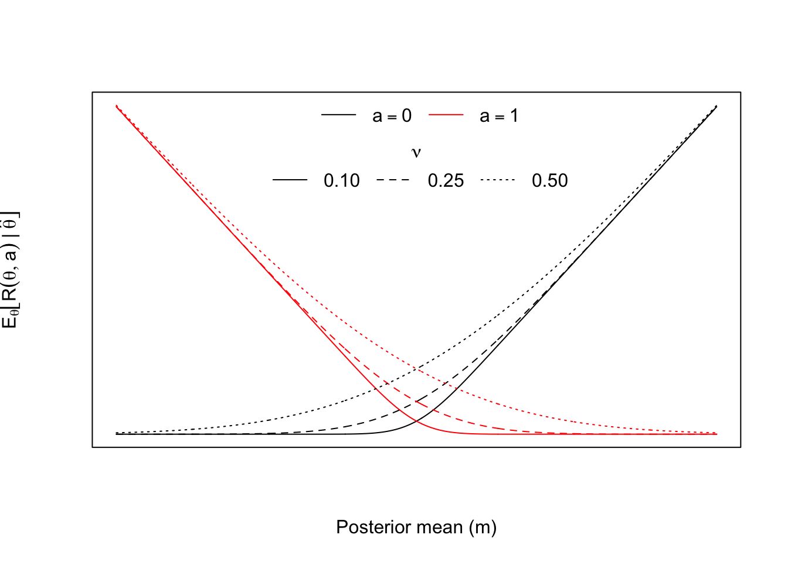
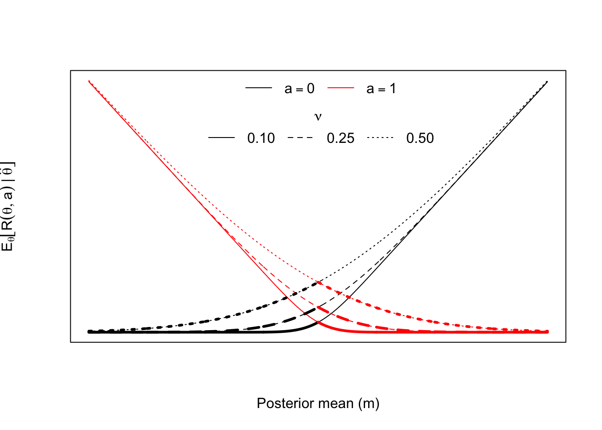
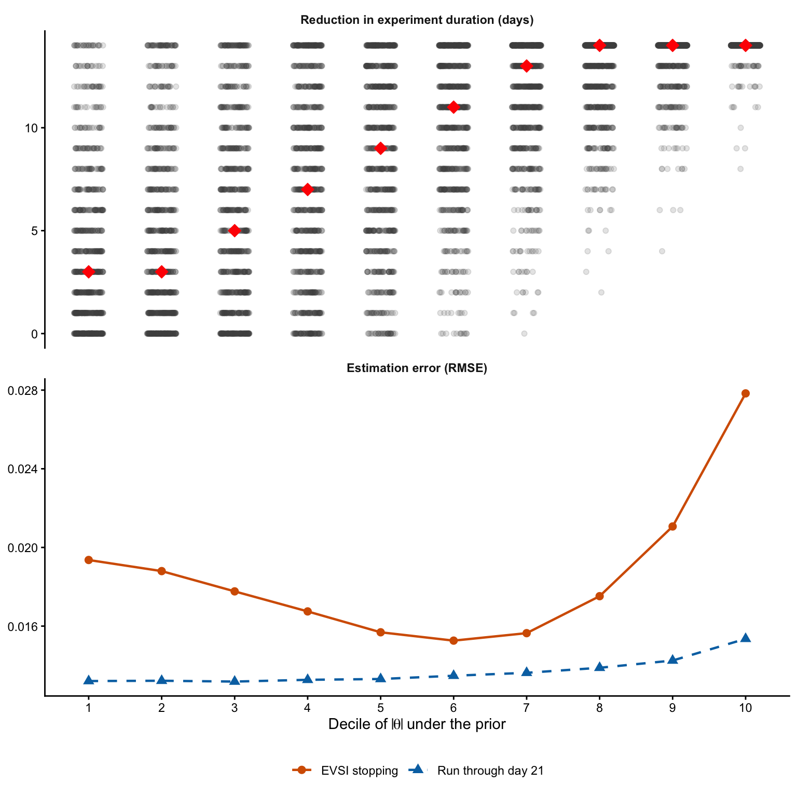

We’re gearing up for a really cool decision-theory feature at Datadog. In anticipation, I thought it would be useful to revisit some fundamental material on the subject.
This post revisits three crucial topics in decision theory in the context of A/B testing: loss, the expected value of perfect information (EVPI), and the expected value of sample information (EVSI). We’ll discuss how to interpret these quantities in A/B testing and how they might inform decisions about stopping an A/B test early.
As is typical in these posts, we’ll take a Bayesian approach. Let \(\hat{\theta}\) be an estimator of the treatment effect \(\theta\) with known standard error \(s\). We place a normal prior with mean \(\mu\) and standard deviation \(\tau\) on \(\theta\). The central limit theorem motivates a normal likelihood, giving the familiar conjugate normal–normal model:
\[ \begin{aligned} \hat{\theta} \mid \theta &\sim \operatorname{Normal}(\theta, s^2), \\ \theta &\sim \operatorname{Normal}(\mu, \tau^2). \end{aligned} \]
The posterior distribution is
\[ \theta \mid \hat{\theta} \sim \operatorname{Normal}(m, \nu^2), \]
where
\[ \begin{aligned} \nu^2 &= \left(\dfrac{1}{s^2} + \dfrac{1}{\tau^2}\right)^{-1}, \\ m &= \nu^2 \left(\dfrac{\hat{\theta}}{s^2} + \dfrac{\mu}{\tau^2}\right). \end{aligned} \]
Loss and Regret
Before defining loss, we begin with utility. Utility quantifies the benefit of an action, so it depends on both the state of nature and the action taken. Let \(\theta\) denote the unknown state of nature, and let \(a\) denote the chosen action. In general, \(a\) may take many values (for example, an online experiment may have several variants). For simplicity, we restrict attention to two actions: \(a=0\) means retaining the control, whereas \(a=1\) means shipping the variant.
A simple utility function is
\[ U(\theta, a) = a\theta. \]
Under this definition, shipping the variant yields utility \(\theta\), whereas retaining the control yields utility \(0\). Decision theory is more commonly framed in terms of loss, which we define as negative utility:
\[ \mathcal{L}(\theta, a) = -U(\theta, a) = -a\theta. \]
Because \(\theta\) is unknown, we integrate over its posterior distribution to obtain the posterior expected loss of each action. We write \(\operatorname{E}_{\theta}[\,\cdot \mid \hat{\theta}]\) for expectation with respect to the posterior distribution of \(\theta\) conditional on \(\hat{\theta}\). The loss is linear in \(\theta\), so this expectation is straightforward:
\[ \operatorname{E}_{\theta}[\mathcal{L}(\theta, a) \mid \hat{\theta}] = -a\operatorname{E}_{\theta}[\theta \mid \hat{\theta}] = -am. \]
At decision time, we choose the action that minimizes posterior expected loss. Denote this Bayes action by \(a^\star(\hat{\theta})\). Then
\[ a^\star(\hat{\theta}) = \begin{cases} 1, & m>0, \\ 0, & m\leq 0. \end{cases} \]
When \(m=0\), both actions have the same posterior expected loss (by convention, we retain the control).
Regret and expected regret are closely related to loss and expected loss. Under perfect information, the loss-minimizing action is
\[ a_{\mathrm{opt}}(\theta)=\mathbf{1}\{\theta>0\}, \]
where the indicator equals one when the condition holds and zero otherwise. This definition retains the control when \(\theta=0\). Regret is the difference between the loss from the chosen action and the loss under \(a_{\mathrm{opt}}(\theta)\). We therefore define regret as
\[ R(\theta, a) = \mathcal{L}(\theta, a) - \mathcal{L}\bigl(\theta, a_{\mathrm{opt}}(\theta)\bigr). \]
Equivalently, regret is the opportunity cost evaluated in hindsight. The table below summarizes the loss and regret for each action under both possible signs of \(\theta\).
| Action | \(\theta<0\) | \(\theta>0\) |
|---|---|---|
| Retain the control (\(a=0\)) | Loss: \(0\) Regret: \(0\) |
Loss: \(0\) Regret: \(\theta>0\) |
| Ship the variant (\(a=1\)) | Loss: \(-\theta>0\) Regret: \(-\theta>0\) |
Loss: \(-\theta<0\) Regret: \(0\) |
When \(\theta=0\), both actions have zero loss and zero regret. Therefore,
\[ R(\theta, a) = \begin{cases} \max(0, \theta), & a=0, \\ \max(0, -\theta), & a=1. \end{cases} \]
In previous blog posts, I have used the word loss for what is, relative to the loss \(\mathcal{L}(\theta, a)=-a\theta\), more precisely regret (for an example, see this post). That usage is not mathematically wrong because regret can itself serve as a loss function. It does, however, obscure the distinction between the original loss and the opportunity cost measured relative to the best action.
As Table 1 illustrates, regret differs from loss by the quantity \(\mathcal{L}\bigl(\theta, a_{\mathrm{opt}}(\theta)\bigr)\), which depends on \(\theta\) but not on the chosen action \(a\). Consequently, if two actions \(a_1\) and \(a_2\) satisfy \(\mathcal{L}(\theta, a_1)<\mathcal{L}(\theta, a_2)\), then \(R(\theta, a_1)<R(\theta, a_2)\). The same ordering holds after posterior averaging because the expected shift still does not depend on the action. This is analogous to adding a constant to an objective function (the objective values change, but the optimizer does not).
The posterior expected regret associated with action \(a\) is obtained by integrating over the posterior distribution of \(\theta\). For the normal posterior above,
\[ \begin{aligned} \operatorname{E}_{\theta}[R(\theta, a) \mid \hat{\theta}] &= -am + \operatorname{E}_{\theta}[\max(0, \theta) \mid \hat{\theta}] \\ &= -am + \nu \phi\!\left(\frac{m}{\nu}\right) + m\Phi\!\left(\frac{m}{\nu}\right), \end{aligned} \]
where \(\phi\) and \(\Phi\) are the standard normal density and cumulative distribution function, respectively.

Now is a good time to take stock of what each of these terms means:
- Loss quantifies the consequence of taking action \(a\) when the state of nature is \(\theta\). Under the convention \(\mathcal{L}(\theta,a)=-a\theta\), smaller values are better, and loss may be negative.
- Posterior expected loss averages this consequence over our current uncertainty about \(\theta\) and determines the Bayes action.
- Regret is the additional loss, evaluated in hindsight, relative to the perfect-information action \(a_{\mathrm{opt}}(\theta)\). Regret is always nonnegative.
- Posterior expected regret averages this hindsight opportunity cost over the posterior distribution, including states in which the chosen action is optimal and regret is zero.
Expected Value of Perfect Information
Perfect information means learning the true value of \(\theta\) before choosing an action. Because regret measures the opportunity cost of not taking the perfect-information action, learning \(\theta\) eliminates regret:
\[ R\bigl(\theta,a_{\mathrm{opt}}(\theta)\bigr)=0. \]
Without perfect information, we choose the Bayes action \(a^\star(\hat{\theta})\). Its posterior expected regret is the opportunity cost that remains because we do not know \(\theta\). This is the expected value of perfect information (EVPI):
\[ \operatorname{EVPI}(\hat{\theta}) = \operatorname{E}_{\theta}\!\left[ R\bigl(\theta,a^\star(\hat{\theta})\bigr) \mid\hat{\theta} \right] = \min_{a\in\{0,1\}} \operatorname{E}_{\theta}[R(\theta,a)\mid\hat{\theta}]. \]
EVPI is therefore the posterior expected regret that perfect information would eliminate. Using the definition of regret from the previous section, the same quantity can be written as the reduction in posterior expected loss:
\[ \begin{aligned} \operatorname{EVPI}(\hat{\theta}) ={}&\operatorname{E}_{\theta}\!\left[ \mathcal{L}\bigl(\theta,a^\star(\hat{\theta})\bigr) \mid\hat{\theta} \right]\\ &-\operatorname{E}_{\theta}\!\left[ \mathcal{L}\bigl(\theta,a_{\mathrm{opt}}(\theta)\bigr) \mid\hat{\theta} \right]. \end{aligned} \]
For the normal posterior, substituting the posterior expected regret derived in the previous section gives
\[ \begin{aligned} \operatorname{EVPI}(\hat{\theta}) &= -a^\star(\hat{\theta})m +\nu \phi\!\left(\frac{m}{\nu}\right) +m \Phi\!\left(\frac{m}{\nu}\right) \\ &= \nu \phi\!\left(\frac{m}{\nu}\right) +m \Phi\!\left(\frac{m}{\nu}\right)-\max(0,m) \\ &= \nu \phi\!\left(\frac{|m|}{\nu}\right) -|m| \Phi\!\left(-\frac{|m|}{\nu}\right). \end{aligned} \]
The identity is visible in Figure 3. For each value of \(\nu\), EVPI is the lower envelope of the two action-specific curves, and the minimizing curve changes at \(m=0\).

As Figure 3 shows, EVPI has a direct interpretation in an A/B test. It is the posterior expected regret of the best decision available today. Perfect information reveals the true treatment effect and eliminates this regret. EVPI is nonnegative and, for a fixed posterior standard deviation \(\nu\), is largest when \(m=0\). In that case, the posterior assigns equal probability to \(\theta>0\) and \(\theta<0\), so uncertainty about which action is optimal is greatest. The EVPI is then
\[ \operatorname{EVPI}(\hat{\theta})=\frac{\nu}{\sqrt{2\pi}}. \]
As \(|m|/\nu\) grows, the posterior places nearly all its mass on one side of the decision boundary and EVPI approaches zero. Perfect information then has little value because it is unlikely to change the action. EVPI therefore provides an upper bound on the value of any finite additional sample. In particular, the expected value of sample information cannot exceed EVPI when both are calculated under the same model and loss function.
In this example, EVPI has the same units as the treatment effect \(\theta\). If \(\theta\) measures a change in conversion rate or revenue per user, EVPI is the largest expected per-unit improvement in decision quality that additional information could provide. Converting it into total business value requires scaling it by the relevant future traffic, time horizon, or revenue exposure.
Now is a good time to take stock of what we’ve learned:
- EVPI is the posterior expected regret of the best decision available today. It is the regret that learning the true effect would eliminate.
- A large EVPI means that substantial decision-relevant uncertainty remains.
- EVPI places a finite upper bound on the value of additional data. More data can only reduce our expected opportunity cost so much.
EVPI is a useful theoretical quantity, but we can never know \(\theta\) perfectly. Framing the decision in terms of perfect information is a little like telling me I should remain a bachelor because I could marry Scarlett Johansson (it just isn’t going to happen). We may not be able to obtain perfect information, but we can collect additional data. EVSI quantifies the value of that realistic option.
Expected Value of Sample Information
Suppose we collect an additional, independent sample and summarize it by \(\hat{\theta}_{\mathrm{new}}\), where
\[ \hat{\theta}_{\mathrm{new}}\mid\theta \sim \operatorname{Normal}(\theta,s_{\mathrm{new}}^2). \]
Here \(s_{\mathrm{new}}\) is the standard error of the future estimate. Conditional on \(\theta\), the current and future estimates are independent. Before observing the new sample, its posterior predictive distribution is
\[ \hat{\theta}_{\mathrm{new}}\mid\hat{\theta} \sim \operatorname{Normal}(m,\nu^2+s_{\mathrm{new}}^2). \]
After observing \(\hat{\theta}_{\mathrm{new}}\), the updated posterior is
\[ \theta\mid\hat{\theta},\hat{\theta}_{\mathrm{new}} \sim \operatorname{Normal}(m_{\mathrm{new}},\nu_{\mathrm{new}}^2), \]
where
\[ \begin{aligned} \nu_{\mathrm{new}}^2 &=\left(\frac{1}{\nu^2}+\frac{1}{s_{\mathrm{new}}^2}\right)^{-1} =\frac{\nu^2s_{\mathrm{new}}^2}{\nu^2+s_{\mathrm{new}}^2},\\ m_{\mathrm{new}} &=\nu_{\mathrm{new}}^2 \left(\frac{m}{\nu^2}+\frac{\hat{\theta}_{\mathrm{new}}}{s_{\mathrm{new}}^2}\right)\\ &=m+\frac{\nu^2}{\nu^2+s_{\mathrm{new}}^2} (\hat{\theta}_{\mathrm{new}}-m). \end{aligned} \]
The best action after observing the new sample is therefore
\[ a^\star_{\mathrm{new}}(\hat{\theta},\hat{\theta}_{\mathrm{new}}) =\mathbb{1}(m_{\mathrm{new}}>0). \]
The expected value of sample information (EVSI) is the expected reduction in loss from using this future decision rather than making the best decision available today:
\[ \begin{aligned} \operatorname{EVSI}(\hat{\theta}) ={}&\operatorname{E}_{\theta}\left[ \mathcal{L}\bigl(\theta,a^\star(\hat{\theta})\bigr) \mid\hat{\theta} \right]\\ &-\operatorname{E}_{\hat{\theta}_{\mathrm{new}}}\left[ \operatorname{E}_{\theta}\left[ \mathcal{L}\bigl(\theta,a^\star_{\mathrm{new}}(\hat{\theta},\hat{\theta}_{\mathrm{new}})\bigr) \mid\hat{\theta},\hat{\theta}_{\mathrm{new}} \right] \mathrel{\Big|}\hat{\theta} \right]. \end{aligned} \]
The inner expectation is over \(\theta\) under the updated posterior. The outer expectation is over \(\hat{\theta}_{\mathrm{new}}\) under its posterior predictive distribution. This distinction matters because we are evaluating the sample before seeing what it says.
From the earlier expected-loss calculation, the posterior expected loss under the current optimal action is \(-\max(0,m)\). After observing the new sample, the optimal posterior expected loss is \(-\max(0,m_{\mathrm{new}})\). Hence
\[ \operatorname{EVSI}(\hat{\theta}) =\operatorname{E}_{\hat{\theta}_{\mathrm{new}}}\left[ \max(0,m_{\mathrm{new}})\mid\hat{\theta} \right]-\max(0,m). \]
Although \(m_{\mathrm{new}}\) is not known before the new data arrive, its distribution is known. The posterior predictive distribution above implies
\[ m_{\mathrm{new}}\mid\hat{\theta} \sim \operatorname{Normal}(m,\omega^2), \qquad \omega^2 =\nu^2-\nu_{\mathrm{new}}^2 =\frac{\nu^4}{\nu^2+s_{\mathrm{new}}^2}. \]
The identity \(\omega^2=\nu^2-\nu_{\mathrm{new}}^2\) makes the interpretation especially clear. The new sample reduces the posterior variance from \(\nu^2\) to \(\nu_{\mathrm{new}}^2\), so \(\omega^2\) is exactly the reduction in posterior variance. Equivalently,
\[ \nu^2=\nu_{\mathrm{new}}^2+\omega^2. \]
The current posterior uncertainty therefore separates into the uncertainty that will remain after collecting the new sample and the uncertainty that the new sample is expected to resolve.
Using the same positive-part expectation that appeared in the EVPI calculation gives
\[ \begin{aligned} \operatorname{EVSI}(\hat{\theta}) &=\omega\phi\left(\frac{m}{\omega}\right) +m\Phi\left(\frac{m}{\omega}\right)-\max(0,m)\\ &=\omega\phi\left(\frac{|m|}{\omega}\right) -|m|\Phi\left(-\frac{|m|}{\omega}\right). \end{aligned} \]
This looks just like the EVPI expression, but with \(\omega\) in place of \(\nu\). That similarity is not an accident. EVPI is the current expected regret, while EVSI is the expected reduction in that regret after collecting the proposed sample:
\[ \operatorname{EVSI}(\hat{\theta}) =\operatorname{EVPI}(\hat{\theta}) -\operatorname{E}_{\hat{\theta}_{\mathrm{new}}}\left[ \operatorname{EVPI}_{\mathrm{new}}(\hat{\theta},\hat{\theta}_{\mathrm{new}}) \mid\hat{\theta} \right]. \]
Here \(\operatorname{EVPI}_{\mathrm{new}}\) is the EVPI calculated from the updated posterior with mean \(m_{\mathrm{new}}\) and standard deviation \(\nu_{\mathrm{new}}\).
Because \(0\leq\omega\leq\nu\), EVSI lies between zero and EVPI. If \(s_{\mathrm{new}}\to\infty\), the additional estimate contains essentially no information, \(\omega\to0\), and EVSI approaches zero. If \(s_{\mathrm{new}}\to0\), the additional estimate reveals \(\theta\), \(\omega\to\nu\), and EVSI approaches EVPI. At the decision boundary \(m=0\),
\[ \operatorname{EVSI}(\hat{\theta})=\frac{\omega}{\sqrt{2\pi}}. \]
EVSI combines the probability that the new sample changes the decision with the cost of keeping the current action when it does. Define the event
\[ \mathcal{D} =\left\{a^\star_{\mathrm{new}}\neq a^\star\right\}. \]
If \(\mathcal{D}\) occurs, the difference in posterior expected loss between keeping the current action and switching to the new optimal action is \(|m_{\mathrm{new}}|\). If \(\mathcal{D}\) does not occur, the new sample leaves the action unchanged. By iterated expectation,
\[ \begin{aligned} \operatorname{EVSI}(\hat{\theta}) &=\operatorname{E}_{\hat{\theta}_{\mathrm{new}}}\left[ |m_{\mathrm{new}}|\mathbb{1}(\mathcal{D}) \mid\hat{\theta} \right]\\ &=\Pr(\mathcal{D}\mid\hat{\theta}) \operatorname{E}_{\hat{\theta}_{\mathrm{new}}}\left[ |m_{\mathrm{new}}| \mid\mathcal{D},\hat{\theta} \right]. \end{aligned} \]
Let \(z=|m|/\omega\). Because \(m_{\mathrm{new}}\mid\hat{\theta}\sim\operatorname{Normal}(m,\omega^2)\), the probability of a decision change is
\[ \Pr(\mathcal{D}\mid\hat{\theta})=\Phi(-z), \]
and the expected cost of keeping the current action, conditional on the decision changing, is
\[ \operatorname{E}_{\hat{\theta}_{\mathrm{new}}}\left[ |m_{\mathrm{new}}| \mid\mathcal{D},\hat{\theta} \right] =\omega\frac{\phi(z)}{\Phi(-z)}-|m|. \]
Consequently,
\[ \begin{aligned} \operatorname{EVSI}(\hat{\theta}) &=\underbrace{\Phi(-z)}_{\text{probability of a decision change}} \times \underbrace{\left[ \omega\frac{\phi(z)}{\Phi(-z)}-|m| \right]}_{\text{expected cost conditional on a decision change}}\\ &=\omega\phi(z)-|m|\Phi(-z), \end{aligned} \]
which recovers the EVSI expression above. A decision change does not prove that the current action is wrong. Rather, \(|m_{\mathrm{new}}|\) is the posterior expected cost of retaining it after the new sample favors the other action.
Now is a good time to take stock of what we’ve learned:
- EVSI is the expected reduction in regret from collecting the proposed sample. It equals the probability of a decision change multiplied by the expected loss avoided when the decision changes.
- The quantity \(\omega^2=\nu^2-\nu_{\mathrm{new}}^2\) is the posterior variance that the new sample is expected to resolve. A more precise sample produces a larger \(\omega^2\) and a larger EVSI.
- EVSI lies between zero and EVPI. No finite sample can be worth more than learning \(\theta\) perfectly.
- A practical stopping rule can specify a small EVSI tolerance and stop when the remaining sample is expected to reduce regret by less than that amount.
What Does This Imply For Stopping an A/B Test?
EVSI is something we can compute analytically from our current posterior and a proposed additional run length (for example, another week). This suggests the following recursive stopping rule:
- Obtain the posterior given the data observed to date.
- Specify the proposed additional sample and an EVSI tolerance, then compute the sample’s EVSI.
- If EVSI is smaller than the tolerance:
- End the test and make the decision that minimizes posterior expected loss (or, equivalently, posterior expected regret). Collecting the proposed sample would not reduce regret by an amount we consider consequential.
- The factorization above explains why EVSI may be small. Either the new sample is unlikely to change our decision, the expected consequence of changing the decision is small, or both. In plain language, we are unlikely to change our mind, and it would not be very consequential if we did.
- If EVSI is larger than the tolerance:
- Collect the proposed sample, update the posterior, and return to the first step.
We can use a simulation to see how this rule changes the duration of an A/B test. Suppose an experiment is planned to run for 21 days and information accumulates uniformly over time. We first evaluate it at the end of day 7 and then reevaluate it once per day until day 21.
To calibrate the amount of information available at day 21, I use a frequentist power calculation. Under the prior \(\theta\sim\operatorname{Normal}(0,\tau^2)\), the distribution of \(|\theta|\) is half-normal with mean
\[ \delta=\operatorname{E}_{\theta}[|\theta|] =\tau\sqrt{\frac{2}{\pi}}. \]
For \(\tau=0.05\), this gives \(\delta\approx0.04\). I choose the day-21 standard error so that a two-sided test with significance level \(0.05\) has 80% power when the true effect is \(\delta\). In other words, if we were frequentists and ran the experiment for all three weeks, we would have 80% power to detect an effect equal to the prior mean absolute effect. Solving the power equation gives a day-21 standard error of approximately \(0.0142\).
For each simulated experiment, I draw the true effect from the prior \(\theta\sim\operatorname{Normal}(0,0.05^2)\). The correlated \(Z\)-statistics follow the canonical joint distribution for repeated looks at accumulating data. At each look, I update the same \(\operatorname{Normal}(0,0.05^2)\) prior and calculate the EVSI of collecting all the information remaining through day 21.
Rather than assign a monetary cost to another day of experimentation, I define a small tolerance for the expected reduction in regret. I set the EVSI cutoff to \(0.1\%\) of \(\delta\), or approximately \(4\times10^{-5}\). On day \(d\), the experiment stops when the EVSI of collecting all the information remaining through day 21 falls below this cutoff. Otherwise, the experiment continues and the calculation is repeated the next day.

Under this illustrative threshold, the median reduction is 11 days across all simulated experiments. Experiments in the first decile of \(|\theta|\) have a median reduction of 3 days, while those in the tenth decile have a median reduction of 14 days. Large effects tend to move the posterior mean away from the decision boundary quickly, so the probability that the remaining data reverse the action becomes small. Effects near zero remain decision-relevant for longer and therefore produce smaller reductions in run time.
The lower panel compares estimation error under two schedules. If \(m_{i,\mathrm{stop}}\) is the posterior mean when simulation \(i\) stops, then its RMSE in decile \(j\) is
\[ \operatorname{RMSE}_{j,\mathrm{stop}} =\sqrt{\frac{1}{n_j}\sum_{i\in j} \left(m_{i,\mathrm{stop}}-\theta_i\right)^2}. \]
The second curve replaces \(m_{i,\mathrm{stop}}\) with the posterior mean at day 21 for the same simulations. The vertical gap between the curves is the estimation cost of stopping early: the increase in RMSE relative to collecting all the planned information. This comparison also separates the effect of data-dependent stopping from differences in the simulated effects across deciles.
These numbers are not a general benchmark. The stopping times and estimation cost depend on the prior, information schedule, loss scale, and EVSI threshold. The threshold makes the tolerance for additional expected regret explicit, while the RMSE comparison shows the estimation accuracy traded away by stopping early.
Conclusion
Let’s finish by taking stock of the main ideas:
- Loss measures the consequence of an action, whereas regret measures the additional loss relative to the action we would take if we knew the true effect. They differ numerically, but they produce the same optimal action in this setup.
- EVPI is the posterior expected regret of the best action available today. It is the regret that perfect information would eliminate and therefore an upper bound on the value of any additional sample.
- EVSI is the expected reduction in regret from a proposed sample. It can be understood as the probability that the sample changes the decision multiplied by the expected consequence of retaining the current action when that change occurs.
- An EVSI tolerance turns these ideas into a sequential stopping rule. We continue collecting data while the remaining sample can meaningfully improve the decision, and we stop when its expected reduction in regret becomes negligible.
- This stopping rule is designed to improve decisions, not to minimize estimation error. Ending experiments early can save substantial time, but the comparison with a fixed day-21 analysis makes the accompanying loss of estimation precision explicit.
Decision theory does not make the uncertainty disappear. It gives us a coherent way to decide whether resolving more of that uncertainty is worth the additional data.